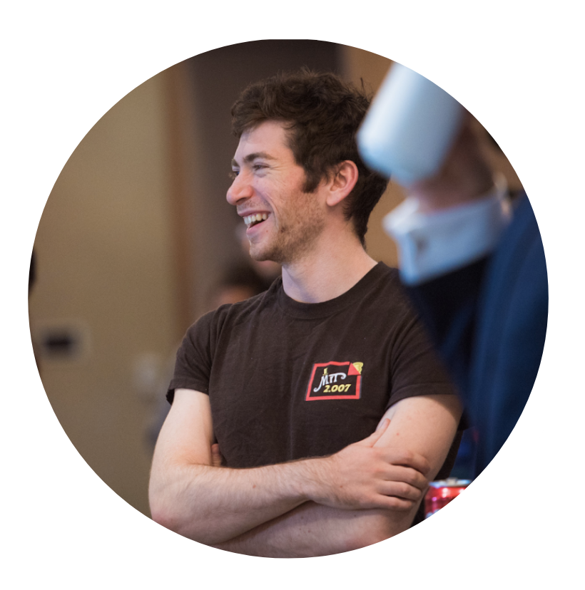

Gabriel MargolisI am a PhD student at the Computer Science and Artificial Intelligence Laboratory (CSAIL) at MIT, where I work on Embodied Intelligence. My research, advised by Pulkit Agrawal, is concerned with making effective use of vision in contact-rich control tasks. Previously, I received my BS and MEng degrees at MIT in 2020 and 2021. |
 |
ResearchI'm interested in robot learning, visual control, and contact-based interaction. |

|
Visual Intelligence for Quadruped RobotsGabriel Margolis, Tao Chen, Kartik Paigwar, Xiang Fu, Donghyun Kim, Sangbae Kim, Pulkit Agrawal For my Master’s Thesis, I worked on enabling visual intelligence for the MIT Mini Cheetah. With this work, supervised by Pulkit Agrawal in collaboration with Sangbae Kim’s Biomimetic Robotics Laboratory, we aim to unlock the potential of legged robots to robustly navigate highly discontinuous terrains without extensive pre-mapping or offline trajectory optimization. Our approach combines robot learning with proven model-based control architectures, and our development process has involved extensive integration of control, sensing, hardware, simulation, and testbed components. |

|
Informative Neural Ensemble Kalman LearningMargaret Trautner, Gabriel Margolis, Sai Ravela From Spring 2019 to Winter 2020, I studied connections between optimal control and neural learning under the supervision of Sai Ravela in MIT’s Earth Signals and Systems Group. We developed a method which quantifies uncertainty in the parameters of a neural network during supervised learning using Ensemble Kalman Filtering, then efficiently learns the structure for a compact neural representation of a dynamical system by maximizing information gain. We presented our paper, avaiable on arXiv, at the DDDAS 2020 Conference. |

|
Model-based Informative Path PlanningGabriel Margolis, Eric Timmons, Brian Williams From Winter 2018 to Spring 2019, I investigated autonomous science on the Slocum Glider, supervised by Brian Williams in MIT’s Model-based Embedded and Robotic Systems Group (MERS). Our focus was on enabling the long-range underwater vehicle to efficently plan to gather information about the relationships between properties of its environment. The resulting thesis, presentation, and code can be found on GitHub. |
TeachingClasses I've taught. |

|
6.141 Robotics: Science and SystemsIn Spring 2021, I was a Graduate Teaching Assistant to Luca Carlone in MIT’s premier hands-on robotics course, Robotics: Science and Systems. Students learned to construct an autonomous driving stack from the ground up, implementing control, path planning, and localization algorithms in ROS and deploying them in simulation as well as on real hardware. The semester culminates with the Grand Challenge: an all-out autonomous race through the basement of MIT’s Stata Center. This year, our course staff supported both a socially distanced in-person challenge and an online challenge. |

|
16.410 Principles of Autonomy and Decision MakingI am a Graduate Teaching Assistant for Principles of Autonomy and Decision Making, taught by Howie Shrobe, this Fall 2020. In this joint course, populated by undergraduate and graduate computer scientists and aerospace engineers, we introduce our roughly eighty students to planning as state-space search, then take them for a deep dive into algorithms for reasoning efficiently under constraints and uncertainty. Our primary textbook is Artificial Intelligence: A Modern Approach by Russell & Norvig. I hold recitations and office hours, write exams and problem sets, and advise group-based final projects, alongside one other awesome TA. |
Other ProjectsMore fun stuff. |

|
General Motors - Autonomous DrivingIn Summer 2019, I spent three months at GM’s Global Technical Center in Warren, Michigan. I was a member of the Advanced Engineering group’s Autonomous Driving Advanced Sensing team, led by Jon Gerlach. While there, I developed a sensor alignment and validation software tool which eliminated hours of manual labor each time a car’s sensor suite was modified. I also met with suppliers and analyzed emerging sensing technologies, including event-based cameras. |
|
Design and source code from Jon Barron's website and Leonid Keselman's Jekyll Fork |